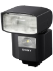
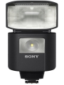
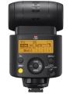
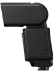
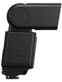
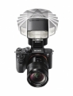

器材库 > 闪光灯 > HVL-F45RM

详细规格
发布日期
2017-02-08
闪光指数
45（105mm、ISO100·m）
闪光次数
碱性电池：约210次镍氢电池：约270
回电时间
碱性电池：约0.1-2.5秒镍氢电池：约0.1-2.0秒
闪光曝光控制
TTL/MANUAL/MULTI
电池
5号碱性电池 / 5号镍氢电池 4枚
尺寸
69.4×113.7×88.3mm
重量
317g
该产品暂无存档的网友点评
产品图 / 样片
HVL-F45RM

HVL-F45RM

HVL-F45RM

HVL-F45RM

HVL-F45RM

HVL-F45RM
评测 / 相关文章
- 详细内容 （存档）
- 小体积大能量 索尼HVL-F45RM闪光灯评测 （存档）
- ［试用］索尼HVL-F45RM实拍样张 （存档）
- ［资讯］索尼HVL-F45RM闪光灯外观图赏 （存档）
- ［资讯］第四支GM镜头觐见 索尼两镜一灯新年种草 （存档）